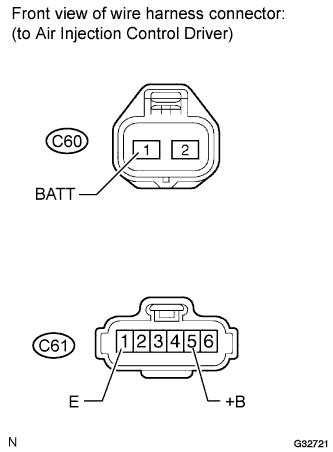
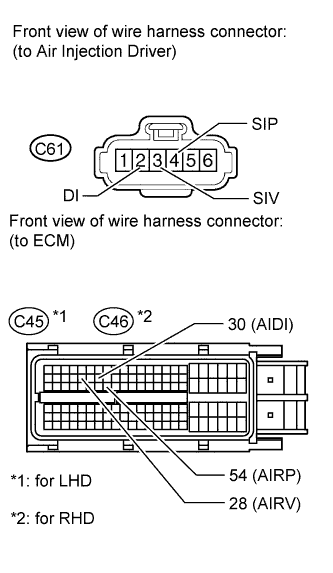
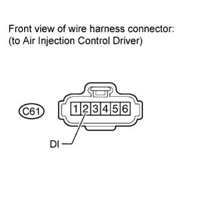
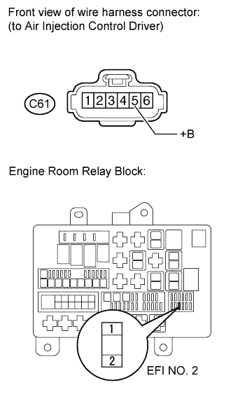

DTC P1613 Secondary Air Injection Driver Malfunction |
| DTC Code | DTC Detection Condition | Trouble Area |
| P1613 | The ECM receives a diagnostic signal from the driver (duty-cycle: 0%, 100% or other than 0, 20, 40, 60, 80, or 100%). |
|
| 1.CHECK AIR INJECTION CONTROL DRIVER |
 |
Inspection 1.
Disconnect the air injection control driver connector.
Measure the voltage according to the value(s) in the table below.
| Tester Connection | Switch Condition | Specified Condition |
| C61-5 (+B) - Body ground | Engine switch on (IG) | 11 to 14 V |
Inspection 2.
Disconnect the air injection control driver connector.
Measure the voltage according to the value(s) in the table below.
| Tester Connection | Switch Condition | Specified Condition |
| C60-1 (BATT) - Body ground | Engine switch on (IG) | 11 to 14 V |
Inspection 3.
Disconnect the air injection control driver connector.
Measure the resistance according to the value(s) in the table below.
| Tester Connection | Condition | Specified Condition |
| C61-1 (E) - Body ground | Always | Below 1 Ω |
| Result | Proceed to |
| OK | A |
| Inspection 1 NG | B |
| Inspection 2 NG | C |
| Inspection 3 NG | D |
|
| ||||
|
| ||||
|
| ||||
| A | |
| 2.CHECK HARNESS AND CONNECTOR (AIR INJECTION CONTROL DRIVER - ECM) |
 |
Disconnect the ECM connector.
Disconnect the air injection control driver connector.
Measure the resistance according to the value(s) in the table below.
| Tester Connection | Condition | Specified Condition |
| C61-3 (SIV) - C45-28 (AIRV) | Always | Below 1 Ω |
| C61-4 (SIP) - C45-54 (AIRP) | Always | Below 1 Ω |
| C61-2 (DI) - C45-30 (AIDI) | Always | Below 1 Ω |
| C61-3 (SIV) or C45-28 (AIRV) - Body ground | Always | 10 kΩ or higher |
| C61-4 (SIP) or C45-54 (AIRP) - Body ground | Always | 10 kΩ or higher |
| C61-2 (DI) or C45-30 (AIDI) - Body ground | Always | 10 kΩ or higher |
| Tester Connection | Condition | Specified Condition |
| C61-3 (SIV) - C46-28 (AIRV) | Always | Below 1 Ω |
| C61-4 (SIP) - C46-54 (AIRP) | Always | Below 1 Ω |
| C61-2 (DI) - C46-30 (AIDI) | Always | Below 1 Ω |
| C61-3 (SIV) or C46-28 (AIRV) - Body ground | Always | 10 kΩ or higher |
| C61-4 (SIP) or C46-54 (AIRP) - Body ground | Always | 10 kΩ or higher |
| C61-2 (DI) or C46-30 (AIDI) - Body ground | Always | 10 kΩ or higher |
|
| ||||
| OK | |
| 3.CHECK ECM (AIDI VOLTAGE) |
 |
Disconnect the air injection control driver connector.
Measure the voltage according to the value(s) in the table below.
| Tester Connection | Switch Condition | Specified Condition |
| C61-2 (DI) - Body ground | Engine switch on (IG) | 11 to 14 V |
|
| ||||
|
| ||||
| 4.CHECK HARNESS AND CONNECTOR (AIR INJECTION CONTROL DRIVER - EFI NO. 2 FUSE) |
 |
Disconnect the air injection control driver connector.
Remove the EFI NO. 2 fuse from the engine room relay block.
Measure the resistance according to the value(s) in the table below.
| Tester Connection | Condition | Specified Condition |
| C61-5 (+B) - EFI NO. 2 fuse (2) | Always | Below 1 Ω |
| C61-5 (+B) or EFI NO. 2 fuse (2) - Body ground | Always | 10 kΩ or higher |
|
| ||||
| OK | ||
| ||
| 5.CHECK HARNESS OR CONNECTOR (BATTERY - A/PUMP FUSE) |
Remove the A/PUMP fuse from the engine room relay block.
Measure the resistance according to the value(s) in the table below.
| Tester Connection | Condition | Specified Condition |
| A/PUMP Fuse | Always | Below 1 Ω |
|
| ||||
| OK | ||
| ||
| 6.REPLACE AIR INJECTION CONTROL DRIVER |
Replace the air injection control driver (Click here).
| NEXT | |
| 7.CHECK WHETHER DTC OUTPUT RECURS (DTC P1613) |
Connect the intelligent tester to the DLC3.
Turn the engine switch on (IG) and turn the tester on.
Clear the DTCs (Click here).
Start the engine.
Perform the Active Test to operate the air injection system.
Enter the following menus: Powertrain / Engine and ECT / Utility / Secondary Air Injection Check (Automatic Mode).
After operating the secondary air injection system, confirm the pending codes of the secondary air injection system by entering the following menus: Powertrain / Engine and ECT / DTC / Pending codes.
| Result | Proceed to |
| No DTC is output | A |
| P1613 is output | B |
|
| ||||
| A | ||
| ||